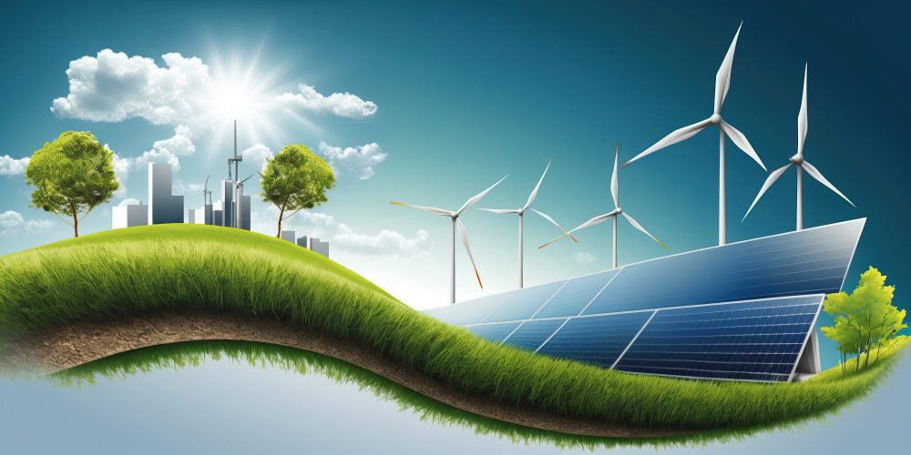
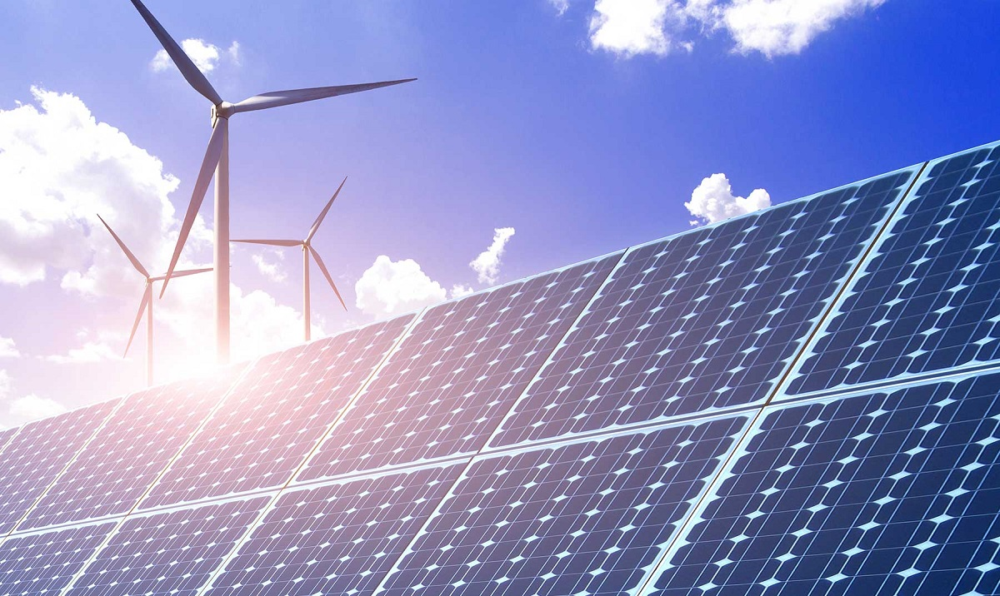
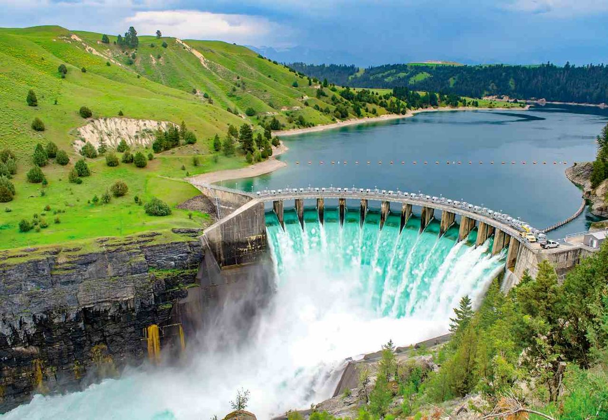

La energía renovable es aquella que se obtiene de fuentes naturales capaces de regenerarse de forma constante y prácticamente ilimitada, como el sol, el viento, el agua, la biomasa o el calor de la tierra.
A diferencia de los combustibles fósiles, estas fuentes no se agotan con el uso ni emiten grandes cantidades de gases contaminantes.
En un mundo cada vez más consciente del impacto ambiental y del cambio climático, la transición hacia energías limpias representa una necesidad urgente.
Las renovables no solo ayudan a reducir las emisiones de gases de efecto invernadero, sino que también promueven la autosuficiencia energética, la innovación tecnológica y la creación de empleos sostenibles.
El desarrollo y la adopción masiva de estas tecnologías está transformando radicalmente la forma en que producimos, distribuimos y consumimos la energía, marcando el camino hacia un futuro más verde y resiliente.

Aprovecha la luz del sol para generar electricidad limpia y renovable.

Utiliza el viento como fuente de energía mediante aerogeneradores.

Generación de electricidad mediante el movimiento del agua en ríos o presas.
Transforma residuos orgánicos en energía útil y sostenible.
La energía renovable proviene de recursos naturales que se reponen de forma continua. Genera más del 50% de toda la electricidad en España, y ese porcentaje sigue creciendo.
España es un país rico en recursos, con suficiente potencial de energía renovable como para generar más de 100 veces la cantidad de electricidad que los estadounidenses consumen cada año.
Propietarios e inquilinos pueden utilizar energía limpia en casa comprando electricidad renovable, instalando sistemas como paneles solares o pequeños aerogeneradores para generar su propia electricidad,
o utilizando recursos renovables como energía solar pasiva o bombas de calor geotérmicas para climatizar agua o habitaciones. Existen muchas formas de mejorar el confort en el hogar utilizando energía renovable.
También es posible conectar estos recursos y sistemas de almacenamiento a una microrred que funcione de manera autónoma y local, o que se integre con la red eléctrica en el punto de conexión entre el consumidor y su proveedor.
Si estás considerando mejorar la eficiencia energética de tu hogar, visita Energy Saver para obtener más información sobre el uso de energía renovable en casa. Es posible que seas elegible para créditos fiscales federales y estatales si instalas un sistema de energía renovable. Consulta ENERGY STAR para conocer los créditos fiscales federales disponibles para propietarios de viviendas. Para información sobre incentivos estatales, visita la Base de Datos de Incentivos Estatales para Energías Renovables y Eficiencia.
La huella de carbono es un indicador ambiental que mide la cantidad total de gases de efecto invernadero (GEI) Gases como el CO₂, CH₄ y N₂O que atrapan el calor en la atmósfera y contribuyen al calentamiento global. que se generan directa o indirectamente por nuestras actividades cotidianas. Conocerla nos permite tomar decisiones más sostenibles y reducir nuestro impacto ambiental.
Es la cantidad total de gases de efecto invernadero que se emiten como resultado de nuestras acciones. Se mide en toneladas de CO₂ equivalente y refleja el impacto climático de personas, productos o procesos.
Se analiza el consumo energético, el tipo de transporte, la alimentación y los residuos generados. Cada dato se multiplica por factores de emisión para calcular su equivalente en CO₂.